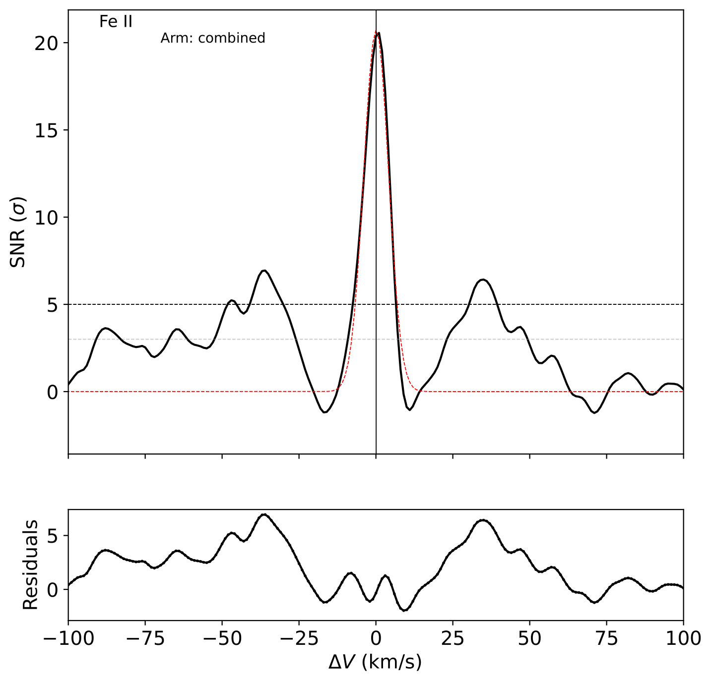
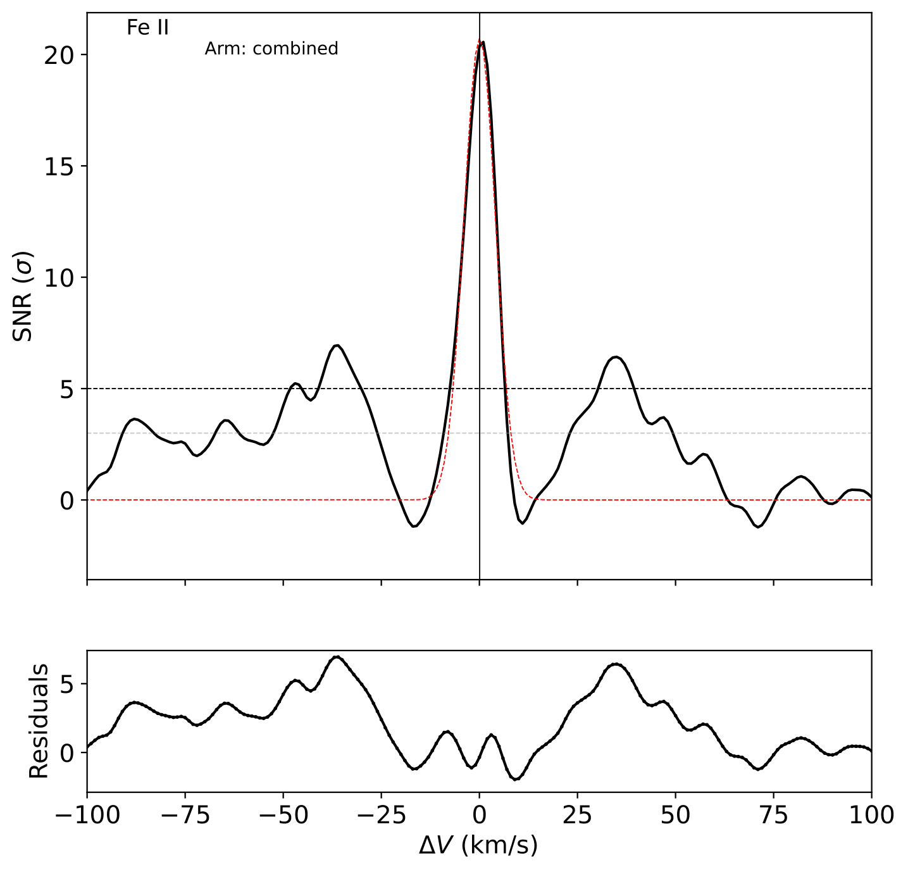

High-Resolution Cross-Correlation Transmission Spectroscopy of KELT-20b
In January 2024, I presented a poster on my analysis of atmospheric physics of KELT-20b, an ultra hot Jupiter exoplanet. For a more detailed summary, please see the abstract. I defended my undergraduate thesis on this topic in December 2024 and am currently preparing a manuscript for submission to a peer-reviewed journal in collaboration with Dr. Marshall Johnson, Prof. Ji Wang, et al.
Using signal processing and statistical analysis, we identified previously undetected atoms and ions and revealed wind speed asymmetry between opposite sides of the exoplanet attributable to three-dimensional dynamical processes. Recently, we analyzed the dynamics of several atoms during the planet's transit at an unprecedentedly high time resolution. This analysis enabled us to map wind patterns to various underlying atmospheric circulation mechanisms by comparing the results with computer models. We also provided a proof-of-concept constraint on KELT-20b’s magnetic field strength by adapting recent magnetohydrodynamics theory to our data—representing, to our knowledge, the first calculation of an exoplanet's magnetic field strength with transmission spectra and the first observational constraint entirely.
 
